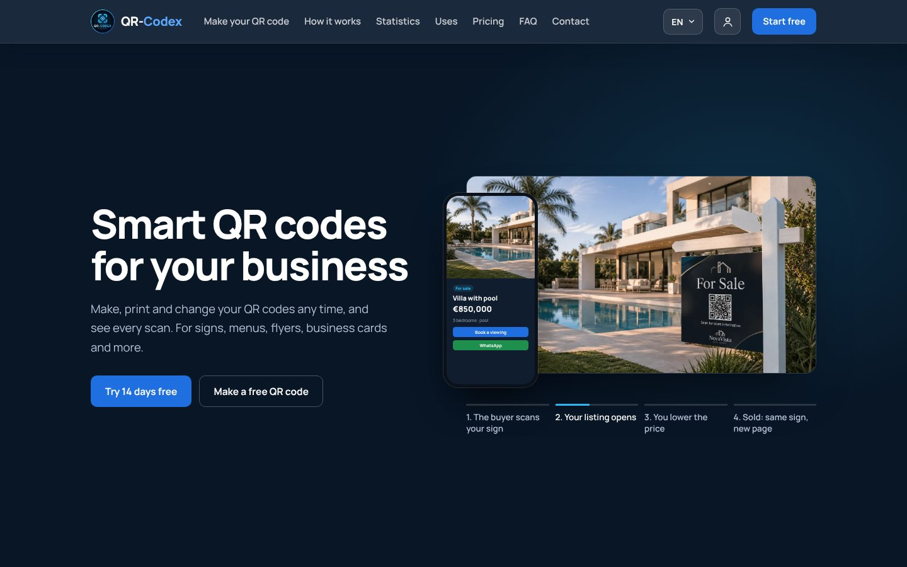
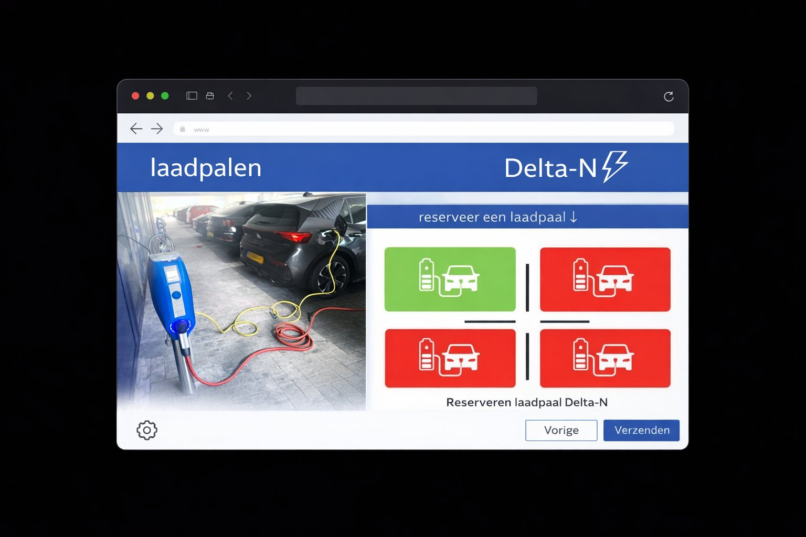
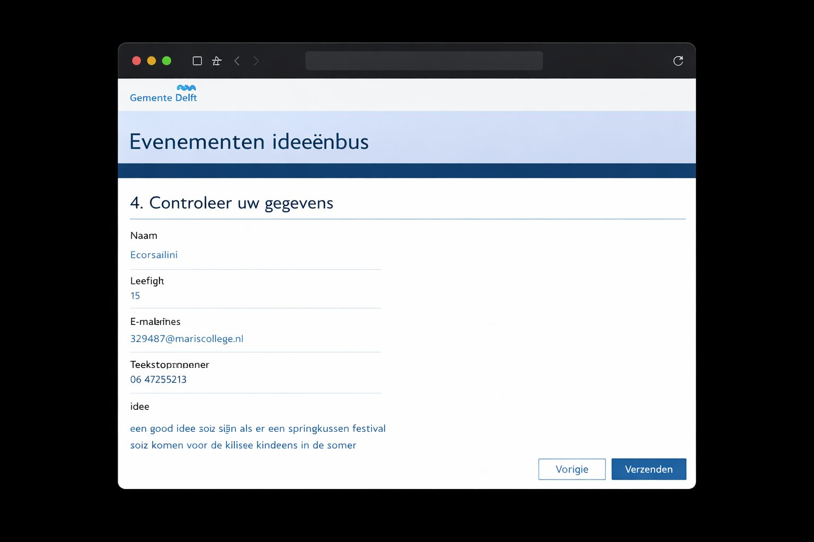
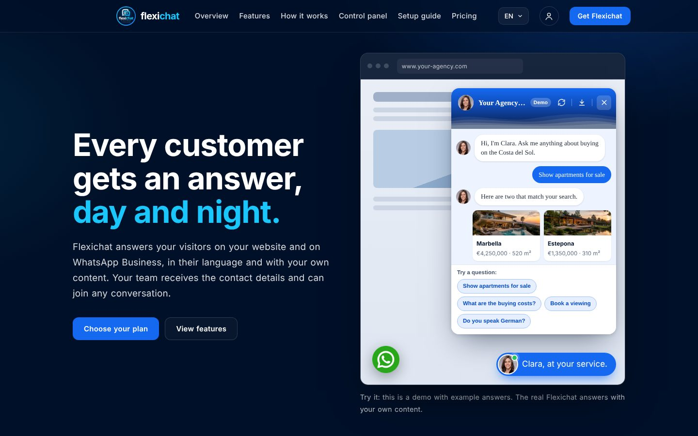
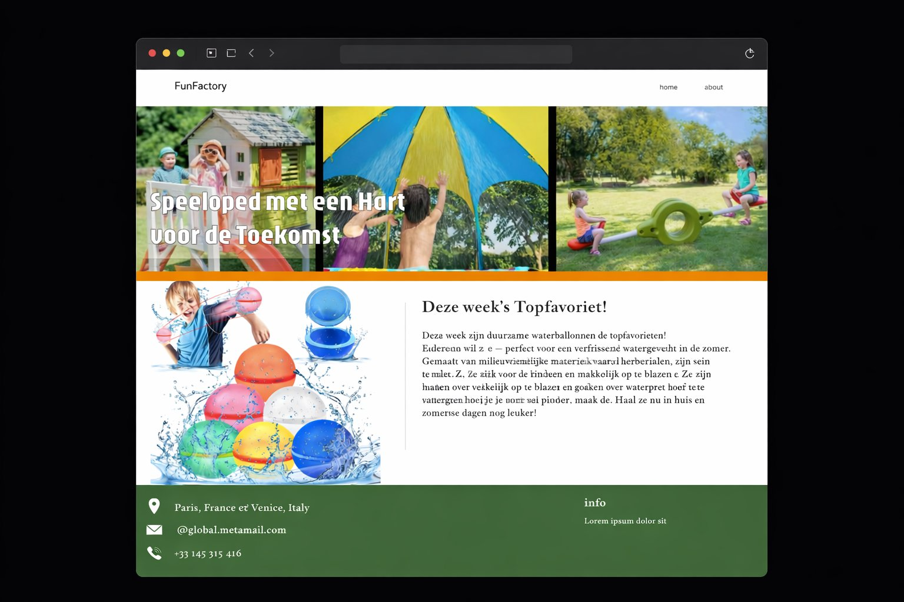
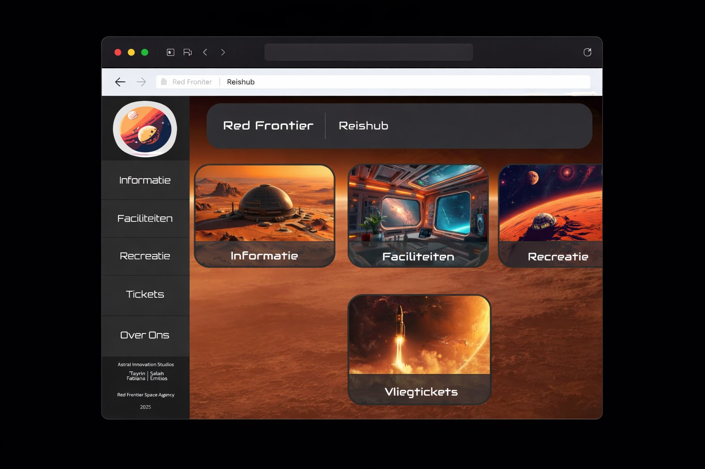
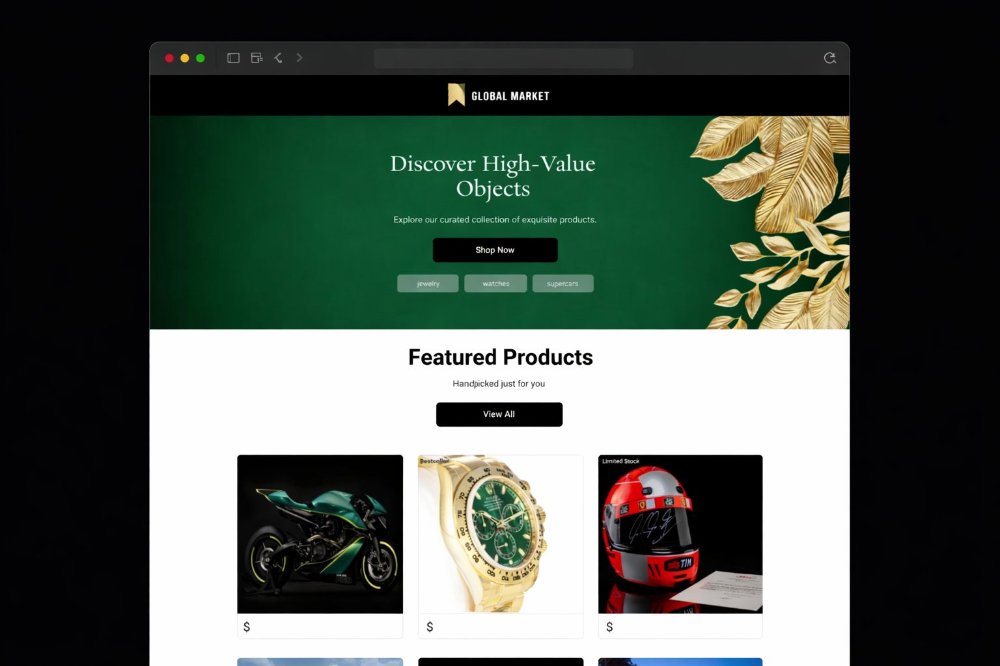
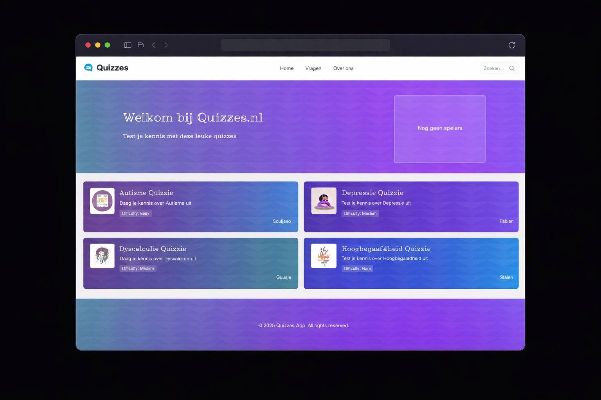

Creative Software Developer · Front-end development & UI/UX design · Open to front-end roles and projects
I am a creative software developer with a strong eye for design and a drive to build products that people actually use. I take an idea from the first sketch to a working product, and I care about the details on both sides: how it looks and how it is built.
I currently work as a software developer at OptimaSys, where I build features across the front-end and back-end of QR-Codex, a commercial web application.
I learn new technologies quickly, work independently and take ownership of what I deliver.

QR-Codex
2026 · OptimaSys internship · full-stack
Role: Front-end & back-end developer (intern)
A web app where businesses create, manage and track their own QR codes. Print a code once, change where it points whenever you want, and see every scan. I build features on the front-end and the back-end: subscriptions and Stripe payments, scan analytics, business tools, the APIs between the website and the app, and five languages.
Result: A commercial SaaS product with paid subscriptions, live in production.
Visit qr-codex.com Open the app 
Charging Station App
2024 · Delta-N internship · low-code
Role: Solo developer
Delta-N had charging stations but no way to reserve them. I proposed a fix and built a low-code app: see which stations are free, pick a time slot and reserve it in seconds.
How it works:
- Check availability: free stations show green, taken ones red, in real time.
- Pick a time: choose the date, start time and end time in a simple form.
- Reserve: one tap and the reservation is confirmed.
Result: Replaced walking-and-hoping with reservations; the app is still used daily.

Youth Voting Platform
2023 · Municipality of Delft · solo, age 15
Role: Solo developer & designer
An event-ideas mailbox for young people in Delft. I wrote the project plan, designed the interface, built it in Oracle APEX and wrote the email logic in PL/SQL: every submission sends one email to the municipality and one back to the young person.
How it works:
- Submit an idea: a four-step form with name, age, contact details, target group and the event idea.
- Review: a summary of everything before submitting.
- Back-end: two automatic emails per submission, written in PL/SQL.
Result: Delivered to the Municipality of Delft as a working platform.

Flexichat website
2026 · OptimaSys internship · web
Role: Web developer (intern)
The promotional website for Flexichat, a chat assistant that answers customers on a company's website and on WhatsApp Business. It has a working demo chat in the hero, a step-by-step setup guide, pricing with Stripe checkout and five languages, and every text can be edited in a CMS.
Result: A multilingual sales site that lets visitors try the product and buy a plan directly.

FunFactory
2024 · School · design & front-end
Role: Designer & front-end developer
A full web design project for a sustainable toy webshop: wireframes for every page, a style guide in Figma, then the whole site built in HTML, CSS and JavaScript.
How it works:
- Research & wireframes: every page mapped out in low fidelity.
- UI design in Figma: palette, typography and components in a style guide.
- Build: homepage, product, detail and cart pages in HTML, CSS and JavaScript.
Result: A complete design system and a working webshop built from it.

Red Frontier
2025 · School · group project
Role: Team member: design & front-end
A group project at school: a travel website for trips to Mars, with facilities, recreation and flight tickets.
Result: A finished, live group website delivered within the school sprint.
Live demo 
Marktplaats
2025 · School · group project
Role: Team member: front-end
A marketplace website built with my class: product listings, categories and featured products.
Result: A working marketplace prototype, live online.
Live demo 
Quizzy
2025 · School · group project
Role: Team member: front-end
A quiz web app built with my class: create quizzes, pick a category and play.
Result: A playable quiz application, live online.
Live demo